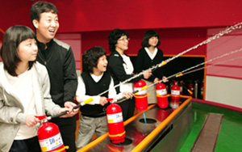

재난안전체험관

사랑스런 우리 아이들의 안전을 위해
재난에 관한 기본적 정보 및 내용, 체험에 의한 실질적 응급처치 및 대응방법 등 생활에서 일어날 수 있는 안전사고 대처방법 교육실시
이용안내
| 이용시간 | 평일 | 10:00 ~ 18:00 (단체예약) |
|---|---|---|
| 토/일/공휴일 | 11:00 / 13:00 / 15:00 / 17:00 (자유관람) | |
| 이용요금 | 무료 | |
체험관안내
- 오리엔테이션홀 : 재난 안전 체험관을 관람하기전에 각종 시설을 소개하고 주의사항 등을 설명하는 곳입니다.
- 재난역사전시관 : 우리의 기억속에서 잊혀질 수 없는 대형재난 사례들을 보고 느끼는 공간입니다.
- 응급처치체험관 : 우리 생활에 필요한 응급처치 및 심폐소생술을 배울 수 있습니다.
- 생활안전전시관 : 일상생활에 흔히 일어날 수 있는 안전사고들을 예방하는 방법을 배울 수 있습니다.
- 소화기체험관 : 물소화기를 이용하여 불을 직접 끄는 방법을 배우고 체험하는 공간입니다.